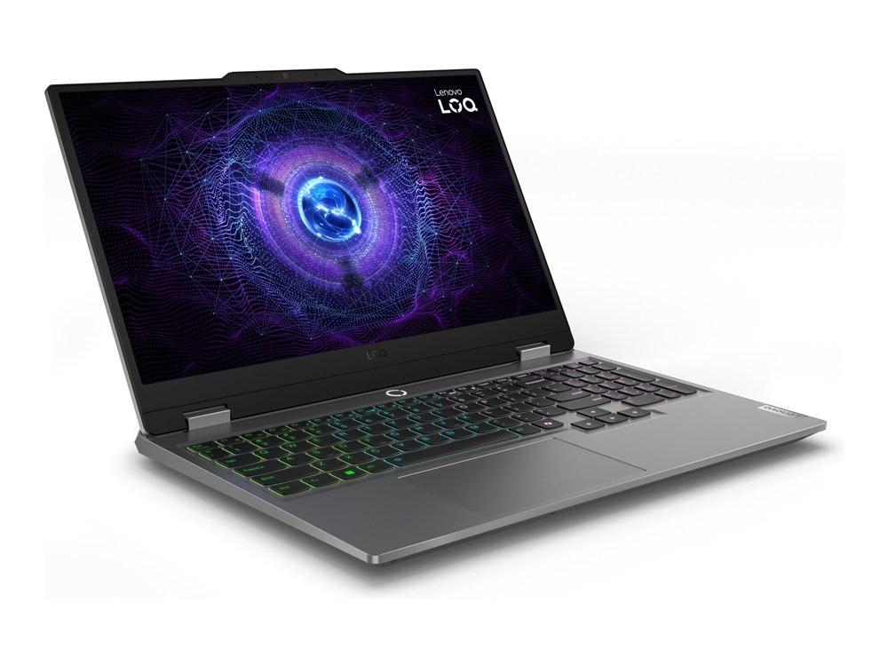

Ficha técnica
| Procesador | Intel Core i7-13650HX |
|---|---|
| Gráficos | NVIDIA RTX 4060 · 8 GB |
| Memoria | 16 GB DDR5 |
| Almacenamiento | 512 GB SSD |
| Pantalla | 15,6" IPS Full HD · 144 Hz |
| Peso | 2,38 kg |
| Autonomía | 6 h según el fabricante |
| Sistema operativo | Windows 11 |
| Precio | 999 € orientativo |
Para quién es
Su mejor baza es el gaming, con 88 de 100. Para moverse se queda en 45 de 100. Con 2,38 kg está entre los más pesados del catálogo. Cuesta 999 €, en la mitad de la tabla de precios.
- Encaja si lo que más te importa es jugar con soltura, y el presupuesto llega a 999 €.
- Busca otra opción si lo que prima es la portabilidad: aquí saca 45 de 100.
Notas por uso
Escala de 0 a 100. En el comparador se recalculan según el perfil que elijas.
Alternativas por precio
Los tres modelos del catálogo que más se acercan a su precio:
- Dell 14 (DC14250)−99 €
- ASUS Zenbook 14 OLED+100 €
- Lenovo ThinkPad E14 Gen 6−100 €
Compáralo con otro modelo
Abre el comparador con este portátil ya cargado y enfréntalo a cualquiera de los 34.
Abrir el comparador